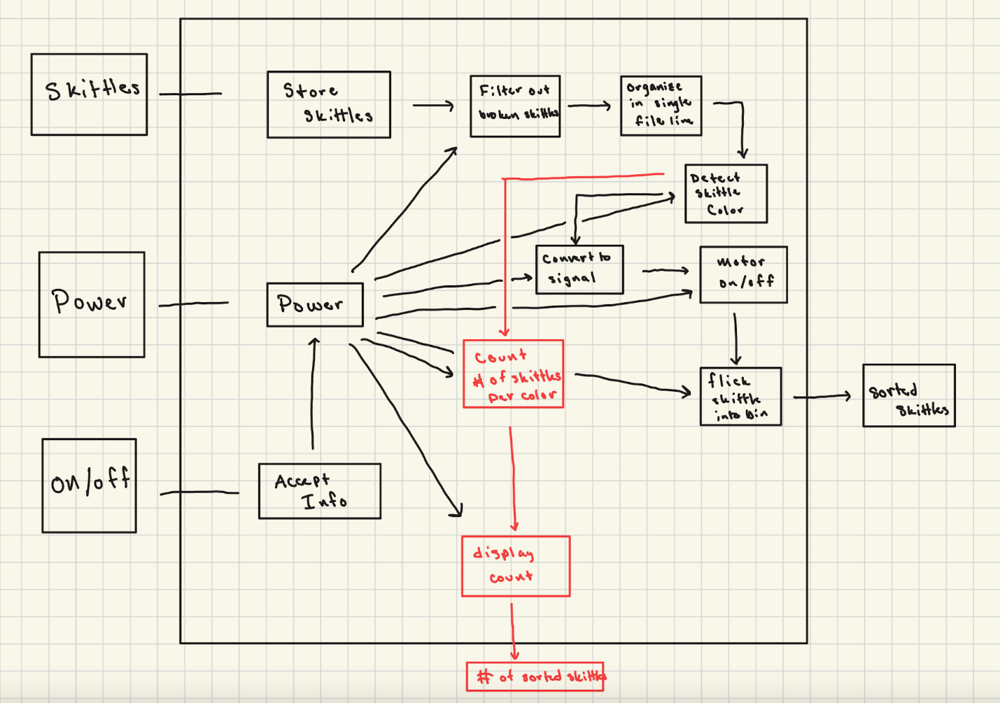
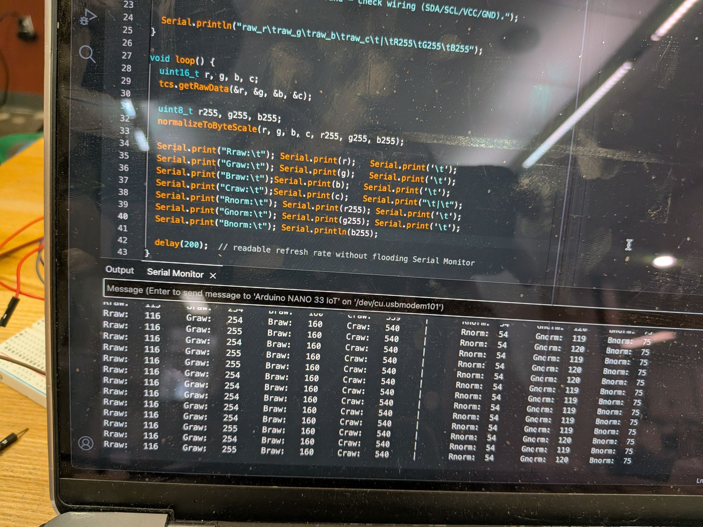

Design & Fabrication
Automated Color Sorter

Project overview
From Client Brief To A Working Candy Sorter.
In a team of four, I helped design and build a device that detects the color of each candy and flicks it into one of five bins, so candy stores can sell single colors in bulk.
The client’s brief set a 2 ft × 2 ft footprint, a $200 budget, and a target of about one candy per second. We broke the device into three subsystems: a hands-free feed that filters out broken pieces and lines candies up single file, an RGB sensor and Arduino that read each color, and a servo-driven arm that flicks each candy into its bin.
Key Work & Outcomes
- Sorted about 21 candies per minute into five color bins.
- Sorted 111 of 125 test candies correctly (≈89%).
- Designed a hands-free feeding pipeline and multi-bin collection system.
- Kept the complete prototype within the $200 budget.
Concept
Mapping Functions To Mechanisms
We listed every function the sorter needed, then picked the simplest mechanism for each.
A morph chart let us compare options side by side. Cost and throughput pushed us toward a funnel-and-ramp feed over conveyors or vibratory bowls, and toward a servo arm over stepper or DC-motor flickers.
| Function | Chosen | Also considered |
|---|---|---|
| Feed candies | Funnel onto a rotating plate | Vibratory bowl, step feeder, rotating drum |
| Single-file line | Sloped ramp sized to one candy | Conveyor belt, reciprocating step |
| Detect color | RGB sensor | Light detector, camera |
| Convert to a signal | Arduino | Raspberry Pi, ESP32 |
| Sort into bins | Servo motor with arm | DC or stepper motor with arm |

Design
From CAD To Prototype
A stationary candy plate, a rotating sorting core, and a stationary base with five bins.


Demo
Sensing And Sorting In Action
The RGB sensor reads each candy, and the servo gates route it to the matching bin.
The Arduino reads raw red, green, blue, and clear values from the sensor, then scales them to a 0–255 range so each color can be matched against a set of thresholds. Steady readings from one candy show the sensor gives a consistent signal to sort on.

Testing
Accuracy By Color
Orange and green sorted almost perfectly; purple and red were the hardest to tell apart.
Across 125 candies the sorter made 14 mistakes, an error rate of about 11%, just above our 10% target. Most errors were purple and red candies, which point to the next improvement: calibrating the RGB thresholds for darker colors.

Continue exploring